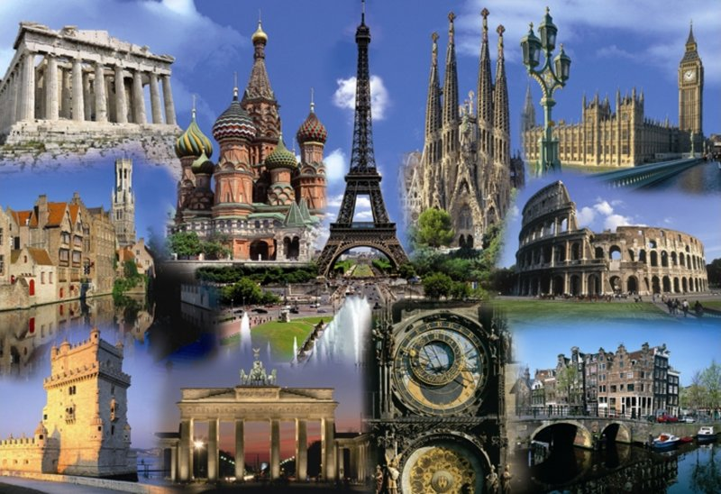
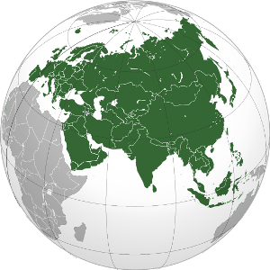
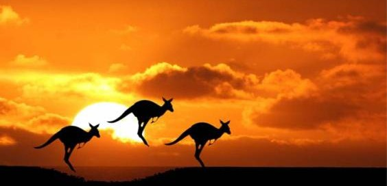
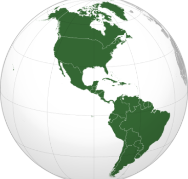

All you need to do is move your chair a few steps. You can see the day end and the twilight falling whenever you like...
Europe
Europe is a continent that comprises the westernmost part of Eurasia. Europe is bordered by the Arctic Ocean to the north, the Atlantic Ocean to the west, and the Mediterranean Sea to the south. The eastern boundary with Asia is a historical and cultural construct, as there is no clear physical and geographical separation between them; Europe is generally considered as separated from Asia by the watershed divides of the Ural and Caucasus Mountains, the Ural River, the Caspian and Black Seas, and the waterways of the Turkish Straits. Yet the non-oceanic borders of Europe—a concept dating back to classical antiquity—are arbitrary. The primarily physiographic term "continent" as applied to Europe also incorporates cultural and political elements whose discontinuities are not always reflected by the continent's current overland boundaries.

Asia
Asia is Earth's largest and most populous continent, located primarily in the eastern and northern hemispheres and sharing the continental landmass of Eurasia with the continent of Europe. Asia covers an area of 44,579,000 square kilometres (17,212,000 sq mi), about 30% of Earth's total land area and 8.7% of the Earth's total surface area. The continent, which has long been home to the majority of the human population,was the site of many of the first civilizations. Asia is notable for not only its overall large size and population, but also dense and large settlements as well as vast barely populated regions within the continent of 4.4 billion people.
In general terms, Asia is bounded on the east by the Pacific Ocean, on the south by the Indian Ocean and on the north by the Arctic Ocean. The western boundary with Europe is a historical and cultural construct, as there is no clear physical and geographical separation between them. The most commonly accepted boundaries place Asia to the east of the Suez Canal, the Ural River, and the Ural Mountains, and south of the Caucasus Mountains and the Caspian and Black Seas.

Australia
It is the smallest of the seven traditional continents in the English conception. The continent lies on a continental shelf overlain by shallow seas which divide it into several landmasses—the Arafura Sea and Torres Strait between mainland Australia and New Guinea, and Bass Strait between mainland Australia and Tasmania. When sea levels were lower during the Pleistocene ice age, including the Last Glacial Maximum about 18,000 BC, they were connected by dry land. During the past 10,000 years, rising sea levels overflowed the lowlands and separated the continent into today's low-lying arid to semi-arid mainland and the two mountainous islands of New Guinea and Tasmania. Geologically, a continent extends to the edge of its continental shelf, so the now-separate islands are considered part of the continent.Due to the spread of animals, fungi and plants across the single Pleistocene landmass the separate lands have a related biota.
New Zealand is not part of the continent of Australia, but of the separate, submerged continent of Zealandia.New Zealand and Australia are both part of the wider regions known as Australasia and Oceania. The term Oceania is often used to denote the region encompassing the Australian continent and various islands in the Pacific Ocean that are not included in the seven-continent model.

America
The Americas, also collectively called America,encompass the totality of the continents of North America and South America.Together they make up most of Earth's western hemisphere and comprise the New World.
Along with their associated islands, they cover 8% of Earth's total surface area and 28.4% of its land area. The topography is dominated by the American Cordillera, a long chain of mountains that runs the length of the west coast. The flatter eastern side of the Americas is dominated by large river basins, such as the Amazon, St. Lawrence River / Great Lakes basin, Mississippi, and La Plata. Since the Americas extend 14,000 km (8,700 mi) from north to south, the climate and ecology vary widely, from the arctic tundra of Northern Canada, Greenland, and Alaska, to the tropical rain forests in Central America and South America.

Africa
Africa is the world's second-largest and second-most-populous continent. At about 30.3 million km² (11.7 million square miles) including adjacent islands, it covers 6% of Earth's total surface area and 20.4 % of its total land area.With 1.2 billion people as of 2016, it accounts for about 16% of the world's human population. The continent is surrounded by the Mediterranean Sea to the north, both the Suez Canal and the Red Sea along the Sinai Peninsula to the northeast, the Indian Ocean to the southeast, and the Atlantic Ocean to the west. The continent includes Madagascar and various archipelagos. It contains 54 fully recognized sovereign states (countries), nine territories and two de facto independent states with limited or no recognition.
Antarctica
Antarctica is Earth's southernmost continent. It contains the geographic South Pole and is situated in the Antarctic region of the Southern Hemisphere, almost entirely south of the Antarctic Circle, and is surrounded by the Southern Ocean. At 14,000,000 square kilometres (5,400,000 square miles), it is the fifth-largest continent. For comparison, Antarctica is nearly twice the size of Australia. About 98% of Antarctica is covered by ice that averages 1.9 km (1.2 mi; 6,200 ft) in thickness, which extends to all but the northernmost reaches of the Antarctic Peninsula.
Antarctica, on average, is the coldest, driest, and windiest continent, and has the highest average elevation of all the continents. Antarctica is a desert, with annual precipitation of only 200 mm (8 in) along the coast and far less inland. The temperature in Antarctica has reached −89.2 °C (−128.6 °F), though the average for the third quarter (the coldest part of the year) is −63 °C (−81 °F). Anywhere from 1,000 to 5,000 people reside throughout the year at the research stations scattered across the continent. Organisms native to Antarctica include many types of algae, bacteria, fungi, plants, protista, and certain animals, such as mites, nematodes, penguins, seals and tardigrades. Vegetation, where it occurs, is tundra.